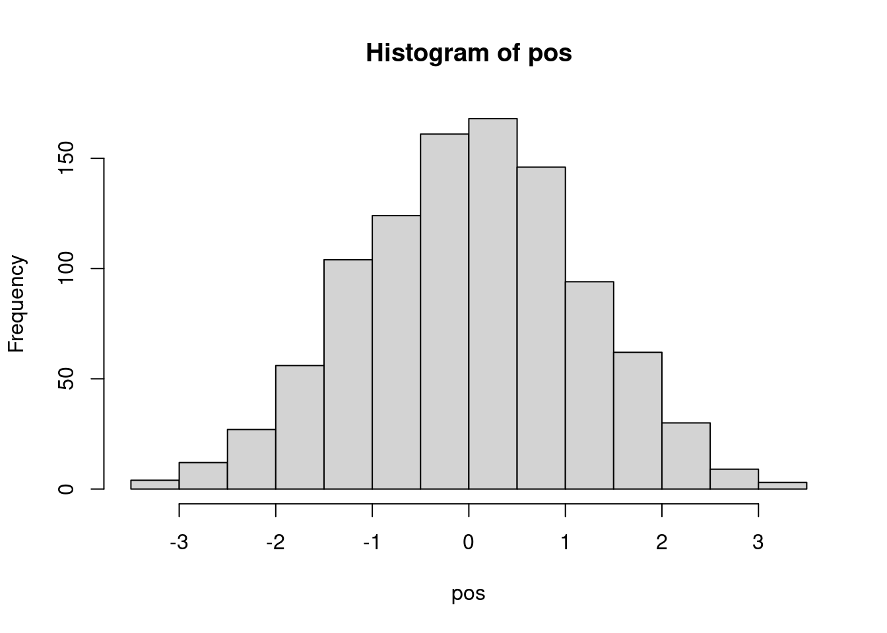
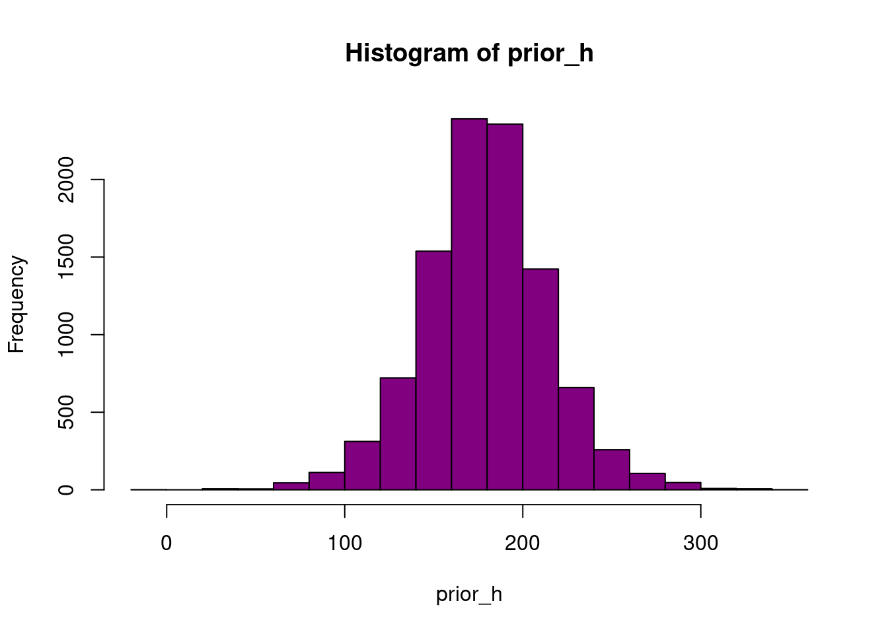
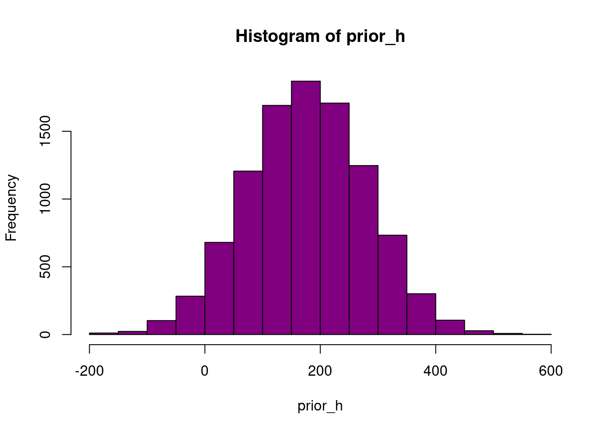
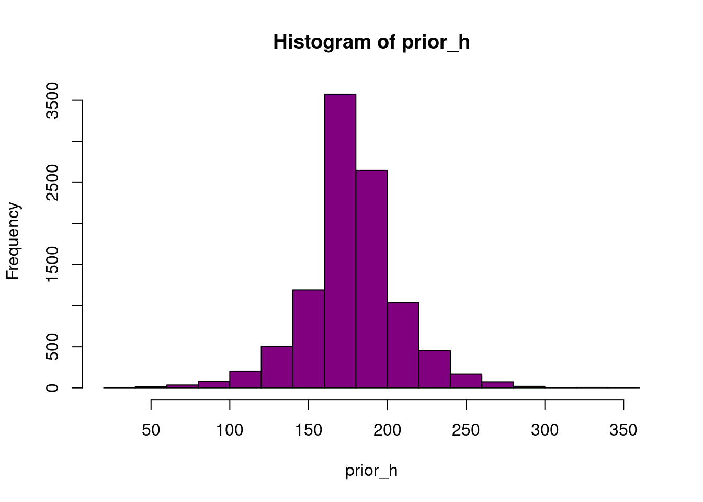

pos <- replicate(1000, sum(runif(4, -1, 1)))
hist(pos)
Leonardo Hansa
24 de febrero de 2024
La distribución normal siempre me ha parecido demasiado perfecta para esperar verla en unos datos reales.
Pero claro, eso me pasa por no saber de dónde viene.
Te cuento.
Imagina un grupo de personas que parten de una línea. Cada uno lanza una moneda al aire; si sale cara, da un paso a la izquierda, de máximo 1 metro; si no, lo da a la derecha. Los pasos estarán entre 0 y 1 metro. Al cabo de 16 lanzamientos, ¿a qué distancia estará del origen?
Será la suma de las distancias de esos pasos.
Podemos calcular esto para 1000 personas.
Primero si dan 4 pasos:
Ahora si dan 8 pasos:
Ahora si dan 16:
Realmente, casi con cualquier distribución puedes hacer esto. La suma de valores de cualquier distribución seguirá una distribución normal (con algunas necesitarás una muestra más grande que con otras).
La altura de varias personas adultas es esperable que se distribuya como una distribución normal.
La idea intuitiva es que la altura de una persona adulta es el resultado de muchos pequeños aumentos que se suman. Para distintos individuos, estas sumas darán resultados distintos, porque los aumentos progresivos entre ellos serán distintos al cabo de los años. Pero el conjunto de todas ellas será normal, si has esperado suficientes años para que los casos más altos (aumentos más grandes acumulados) se compensen con los más bajos (aumentos más pequeños).
Vamos a trabajar con una muestra de personas, de las que conocemos su altura.
Queremos modelizar la altura como una distribución normal, o sea, estimaremos la media y desviación típica.
El método bayesiano considerará todas las medias y desviaciones típicas posibles (realmente haremos una aproximación), y evaluaremos cada una en función de cómo de plausibles son, dados los datos que tenemos.
height weight age male
1 151.765 47.82561 63 1
2 139.700 36.48581 63 0
3 136.525 31.86484 65 0
4 156.845 53.04191 41 1
5 145.415 41.27687 51 0
6 163.830 62.99259 35 1Por ahora, vamos a centrarnos solo en los casos adultos, porque la altura de los niños no se distribuye normalmente, sino que está correlada con la edad.
Queremos modelizar la altura \(h_i\) de cada individuo \(i\) como \(h_i \sim \cal{N}(\mu, \sigma)\). El objetivo es estimar \(\mu\) y \(\sigma\).
Como estamos en un modelo bayesiano, necesitamos unos prioris para ambos parámetros. Los prioris son distribuciones de estos parámetros que consideramos razonables.
\[ h_i \sim \cal{N}(\mu, \sigma) \\ \mu \sim \cal{N}(178, 20) \\ \sigma \sim \cal{U}(0, 50) \]
Estamos dando como distribución a priori de la media una normal centrada en \(\cal{178}\) y con un rango de \(\cal{40}\)cm con una probablidad de 95%.
La priori sobre la desviación típica es plana, en el sentido de que no sabemos dar más importancia a unos valores frente a otros, dentro los propuestos en el intervalo de la uniforme.
Podemos simular cómo serían unos datos a partir de estas prioris.
sample_mu <- rnorm(1e4, 178, 20)
sample_sigma <- runif(1e4, 0, 50)
prior_h <- rnorm(1e4, sample_mu, sample_sigma)
hist(prior_h, col = "#800080")
Lo que hemos hecho es simular 10.000 pares de \(\mu\) y \(\sigma\) y para cada par hemos simulado una altura. Así tenemos 10.000 alturas, cada una originada a partir de una población normal distinta (pero todas las poblaciones normales son tan plausibles como indica nuestra priori).
Si cambiáramos la priori, la simulación a priori de la altura se vería afectada:
sample_mu <- rnorm(1e4, 178, 100)
prior_h <- rnorm(1e4, sample_mu, sample_sigma)
hist(prior_h, col = "#800080")
Esa es una priori menos informativa, con una media mucho más dispersa. Pero puedes ver que las alturas que derivarían de unas prioris así no son realistas, dado que hay casos de altura negativa o también demasiado altos.
fit_altura <- quap(
alist(
height ~ dnorm( mu , sigma ) ,
mu ~ dnorm( 178 , 20 ) ,
sigma ~ dunif( 0 , 50 )
),
data = adultos
)
precis(fit_altura) mean sd 5.5% 94.5%
mu 154.654539 0.4172190 153.987743 155.321336
sigma 7.762397 0.2950864 7.290792 8.234002Obtenemos un modelo normal con una media cuya media es 154 y su desviación típica es 0.42. Sí, el resultado de para la media de de la población es una distribución: no conocemos el valor exacto de la media sino que hemos estimado la distribución a la que pertenece.
Lo mismo con la desviación típica.
Concretamente, esta distribución de la media es la que muestra este histograma.
La priori no informativa que sugerimos antes no tenía sentido porque daba lugar a valores de alturas inhumanas, como negativos o demasiados altos.
Podemos proponer también una priori más restrictica.
sample_mu <- rnorm(1e4, 178, 0.1)
prior_h <- rnorm(1e4, sample_mu, sample_sigma)
hist(prior_h, col = "#800080")
Esta priori fuerza a la media a quedarse mucho más centrada en la media propuesta. Y esto cambia el modelo.
fit_altura2 <- quap(
alist(
height ~ dnorm(mu, sigma),
mu ~ dnorm(178, 0.1),
sigma ~ dunif(0, 50)
),
data = adultos
)
precis(fit_altura2) mean sd 5.5% 94.5%
mu 177.86598 0.1002314 177.70579 178.02617
sigma 24.48463 0.9356079 22.98935 25.97991La media \(\mu\) apenas se ha movido del prior ahora. Sin embargo, el valor de \(\sigma\) ha cambiado mucho porque el modelo lo calcula condicionada a la restricción del otro parámetro.